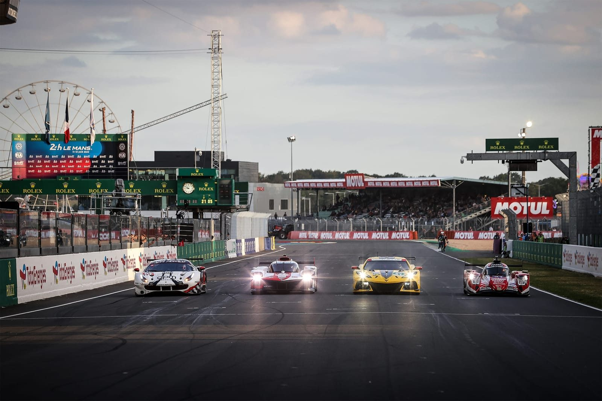

Le calendrier de la saison 2023 du championnat du monde d’endurance FIA WEC
Les 24 heures du Mans est une course automobile d'endurance qui a été créée en 1923 et qui se déroule chaque année sur le circuit de la Sarthe, près de la ville française du Mans. La première course a été organisée par l'Automobile Club de l'Ouest (ACO) pour promouvoir l'industrie automobile française et mettre en avant les capacités des voitures de l'époque.
Au fil des années, la course est devenue un événement majeur du sport automobile, attirant des milliers de spectateurs du monde entier. Les constructeurs automobiles ont également commencé à participer activement à la course, en développant des voitures spécialement conçues pour l'endurance. Les marques comme Bentley, Bugatti, Ferrari, Porsche et Audi ont toutes remporté des victoires légendaires aux 24 heures du Mans.

Au cours de son histoire, la course a connu de nombreux moments marquants, notamment la domination de Bentley dans les années 1920, la rivalité Ferrari-Ford dans les années 1960 et la montée en puissance de Porsche dans les années 1970.
Au fil des ans, l'ACO a mis en place des règles et des réglementations pour assurer la sécurité des pilotes et des spectateurs, ainsi que pour encourager l'innovation technologique et la durabilité environnementale. Aujourd'hui, les 24 heures du Mans attirent toujours des milliers de fans chaque année, qui viennent assister à une course épique et à l'ambiance unique qui entoure l'événement.
